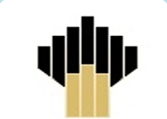
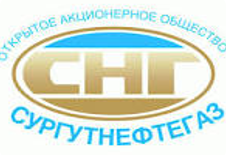
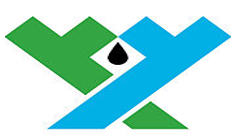
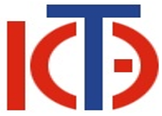
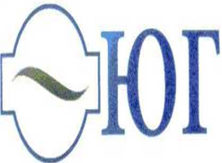
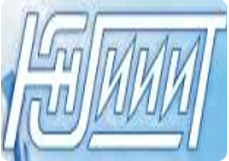

Проект «Формирование системы практико-ориентированной подготовки кадров для предприятий и организаций регион໶
Цель проекта¶
Подготовка квалифицированных кадров для обеспечения потребностей региональной экономики и решения задач стратегического развития Ханты-Мансийского автономного округа - Югры
Задачи проекта¶
- Разработка новых программ прикладного бакалавриата;
- Формирование банка данных необходимых компетенций выпускников совместно с ключевыми предприятиями региона;
- Обновление учебно-методического обеспечения программ прикладного бакалавриата;
- Оснащение лабораторий для реализации разработанных программ;
- Формирование базовых кафедр с ключевыми предприятиями региона;
- Повышение квалификации преподавателей ВУЗа;
- Приглашение сторонних преподавателей и квалифицированных специалистов из реального сектора экономики.
Предприятия-партнеры по реализации Проекта¶

ООО «РН-Юганскнефтега绶
- Ведущее предприятие нефтегазодобычи и переработки РФ
- Разработка образовательных программ, формирование совместных лабораторий

ОАО «Сургутнефтега绶
- Ведущее предприятие нефтегазодобычи и переработки РФ
- Разработка образовательных программ, формирование совместных лабораторий

ООО Салым Петролеум Девелопмент Н.В.¶
- Совместное предприятие нефтегазодобычи
- Разработка образовательных программ, формирование совместных лабораторий

ООО ОАО «Югорская территориальная энергетическая компания»¶
- Крупнейшая компания региона обеспечивающая передачу и сбыт электроэнергии
- Разработка образовательных программ, формирование базовой кафедры
ОАО «Югорская региональная электросетевая компания»¶
- Ведущее предприятие обслуживания и эксплуатации систем электроснабжения
- Разработка образовательных программ, формирование совместных лабораторий

ОАО «Югорская генерирующая компания»¶
- Ведущее предприятие выработки электрической энергии
- Разработка образовательных программ, формирование совместных лабораторий

Югорский НИИ информационных технологий¶
- Ведущее предприятие округа моделирования в области нефтегазодобычи , разработки и эксплуатации информационно-аналитических систем
- Разработка образовательных программ, формирование базовой кафедры
Бюджет проекта (млн.руб.)¶
| 2013 год | 2014 год | 2016 год | |||
|---|---|---|---|---|---|
| Субсидия | Софин. | Субсидия | Софин. | Субсидия | Софин. |
| 50,000 | 15,000 | 50,000 | 15,000 | 00,000 | 15,000 |
Перечень программ¶
Нефтегазовое дело¶
- Развитие нефтегазового сектора - стратегическая задача Ханты-Мансийского автономного округа – Югры;
- Высокая заинтересованность реального сектора экономики, подтверждаемая инвестициями в университет и потребностью на рынке труда
- 6 филиалов реализуют программы СПО в городах Нижневартовск, Сургут, Нефтеюганск, Лангепас, Лянтор, Пыть-Ях.
Электроэнергетика и электротехника¶
- Развитие электроэнергетики - стратегическая задача Ханты-Мансийского автономного округа – Югры;
- Высокая заинтересованность реального сектора экономики, подтверждаемая инвестициями в университет, потребность на рынке труда более 5000 специалистов;
- 3 филиала реализуют программы СПО в городах Нижневартовск, Лангепас, Лянтор.
Информатика и вычислительная техника¶
- Информационные технологии - элемент обеспечивающий развитие и внедрение всех современных технологий и производств;
- Высокая заинтересованность реального сектора экономики, подтверждаемая инвестициями в университет и потребностью на рынке труда;
- 3 филиала реализуют программы СПО в городах Нижневартовск, Лангепас, Лянтор.
Прикладной бакалавриат¶
Это образовательная квалификация, присваиваемая выпускнику, закончившему основную образовательную программу высшего образования уровня бакалавриат:
- обладающего компетенциями по решению технологических задач в различных сферах социально-экономической деятельности,
- готового приступить к профессиональной деятельности сразу после окончания вуза
Основные отличительные особенности программ прикладного бакалавриата связаны с ориентацией на конкретного работодателя, который:
- принимает непосредственное участие в проектировании и реализации образовательных программ,
- организует производственные практики, объем которых увеличен в полтора -два раза в сравнении с программами академического бакалавриата
В программы прикладного бакалавриата:
- предусмотрено присвоение квалификаций рабочего или должности служащего по профилю подготовки,
- в структуру программ заложены элементы сопряжения с профессиональными программами соответствующего профиля (программы СПО)
Участие предприятий партнеров¶
Совместная разработка и согласование учебно-методического обеспечения образовательных программ:
- виртуальные лаборатории;
- образовательные курсы;
- практикумы;
- электронные учебники;
- симуляторы;
- тренажеры;
Софинансирование:
- предоставление баз практик и разработка совместных программ;
- привлечение ППС, сотрудников и студентов через проектное обучение;
- выполнение совместных НИР;
- укрепление материальной базы;
- создание базовых кафедр на производстве.
Информатика и вычислительная техника¶
Материально-Технической обеспечение образовательного процесса:
- Лабораторный комплекс "Система управления насосной перекачивающей станцией".
- Лабораторно-исследовательский комплекс по изучению устройств, преобразующих физико-химические величины, характеризующие состояние технологического процесса в объекте управления, в удобный для использования сигнал
- Лабораторно-исследовательский комплекс по изучению контроля и управления механическим перемещением
- Лабораторный комплекс «Средства автоматизации и управления в максимальной конфигурации»
- Учебно-лабораторный комплекс «Умный дом»
- Образовательный робототехнический комплекс.
- Лаборатория сетевых технологий
- Лаборатория администрирования и баз данных.
Состав участников проекта:
Задействовано 23 преподавателя, из них 8 до 35 лет.
- докторов наук - 4
- кандидатов наук - 11
- представителей реального сектора - 1
- представителей СПО - 2
- преподавателей, аспирантов – 5
Курсы повышения квалификации:
- ОВЕН ПЛК110/160 в среде CoDeSys2.3: продвинутый учебный курс – 1 человек
- Разработка распределенных АСУТП в SCADA и SOFTLOGIC-системе TRACE MODE 6 – 1 человек
- Электронно-методический комплекс. Дидактические возможности и технологии
- электронный средств обучения – 1 человек
- MATLAB Fundamentals – 7 человек
- Java Сквозной Курс от А до Я. От Java программирования до разработки Java EE7 7. Web и EJB приложений с использованием баз данных – 6 человек
- Oracle Database 11g: SQL Fundamentals – 6 человек
Электроэнергетика и электротехника¶
Тренажерный комплекс «Малая генерация – РЭС»
Для обучения студентов и электротехнического персонала практическим навыкам при обслуживании и ремонте оборудования распределительных устройств и электрических сетей, цифровых устройств релейной защиты и автоматики;
Тренажерный комплекс с возможностью удаленного обучения «Техническое обслуживание и ремонт в электросетевом предприятии»
Для дистанционного обучения студентов и электротехнического персонала практическим навыкам при обслуживании и ремонте оборудования распределительных устройств и электрических.
Мобильный тренажерный комплекс «Низковольтная аппаратура»
На базе оборудования Самараэлектрощит и Schneider Electric для обучения работе и обслуживанию высокотехнологичного оборудования в условиях производства при организации сетевого обучения совместно с предприятиями округа.
Тренажерный комплекс по эксплуатации нефтяных скважин оборудованных УЭЦН (установками центробежных электронасосов)
Обеспечение безопасной эксплуатации скважин, снижение негативного влияния "человеческого фактора".
Состав исполнителей проекта:
Всего 24 человека
Из них :
- докторов наук - 3
- кандидатов наук - 13
- представителей реального сектора - 1
- представителей СПО - 3
- заведующих кафедрами - 5
- представителей ВУЗов - партнеров - 4
Курсы повышения квалификации:
- Энергоменеджмент организаций и учреждений – 3 человека;
- Энергоэффективные методы преобразования и передачи электрической энергии в нефтегазовой области – 10 человек;
Нефтегазовое дело¶
Материально-Технической обеспечение образовательного процесса:
- Лаборатория «Буровые и тампонажные растворы и смеси». В лаборатории планируется установить оборудование для исследования фильтрационных и структурно-реологических параметров, как буровых, так и тампонажных растворов.
- Лаборатория «Нефтегазопромысловая геология и геохимия». В лаборатории планируется установить хроматографы, инфракрасные спектрометры, оборудование для определения физико-химических свойств, а также установкой для исследования пластовых нефтей.
- Лаборатория «Технологии бурения скважин». В лаборатории планируется установить макетыи приборы, такие как ВИТР-ОТ, ПОАП-2М, УМГП-3, ПОК,Пресс Controls 65-L11G2/C, Буровой насос НБ-3 (120/40)
- Лаборатория «Бурового оборудования и инструмента». В лаборатории планируется расположить буровой инструмент по видам бурения
Состав исполнителей проекта:
Всего 22 человека
Из них :
- докторов наук - 1
- кандидатов наук - 14
- представителей реального сектора - 1
- представителей СПО – 3
- преподавателей - 3
Курсы повышения квалификации: 1. Буровое дело в нефтегазовом производстве– 9 человек; 2. Бурение нефтяных и газовых скважин – 9человек.
Основные результаты¶
- Повышение качества подготовки кадров по приоритетным направлениям развития региона
- Формирование устойчивых и эффективных связей с реальным сектором экономики в области подготовки кадров
- Разработка программ прикладного бакалавриата и формирование базовых кафедр с ведущими предприятиями региона
- Формирование сквозных программ подготовки кадров в рамках образовательного комплекса Югорского государственного университета
- Увеличение инвестиционной привлекательности образовательного комплекса Югорского государственного университета
Влияние проекта на социально-экономическое развитие региона¶
- Обеспечение стратегических отраслей региональной экономики квалифицированными специалистами, обладающими необходимым набором профессиональных компетенций
- Снижение кадрового дефицита и миграционной зависимости в стратегических отраслях экономики региона, снижение расходов на адаптацию молодых специалистов на производстве
- Повышение эффективности и престижности учреждений СПО образовательного комплекса Югорского государственного университета
- Развитие предприятий нефтегазового сектора, электроэнергетики и информационных технологий
- Повышение доли выпускников трудоустроенных в первый год после окончания ВУЗа